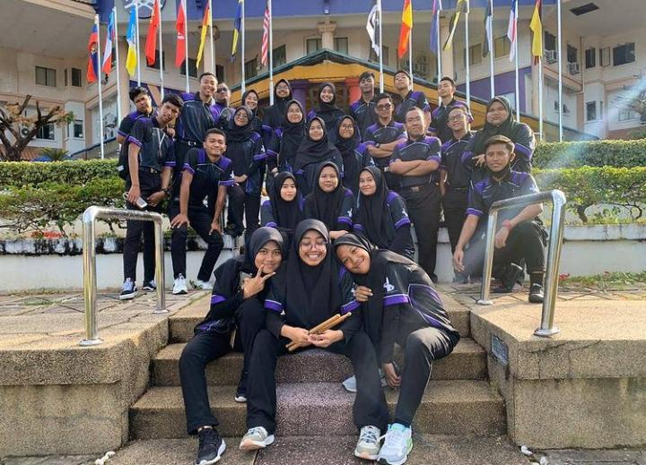

My Experience
My experience at UITM machang was that I joined a brassband and also became a commander in a brassband. Brassband is a co -curriculum that is made as an exercise for UITM students because at UITM it is not only for academic learning but comprehensive such as learning about music as additional knowledge to the students who participate. to the knowledge of the brassband choir is a band where the participants will learn to use musical instruments not only that students will also learn to play songs and make performances if there is a program that requires a band. For my experience in brassband was that I learned to play musical instruments like xylophone and piano. in brassband also I not only learn about music but I also learn about discipline where a student needs to be a disciplined person because to be a successful person needs to be disciplined in doing any task for example need to submit assignments within a given time instead of late . Besides that, in the brassband I participated in a performance program where I played my instrument, the xylophone. So i think that all my experience at UITM and i also provide picture as a proof i join brassband
